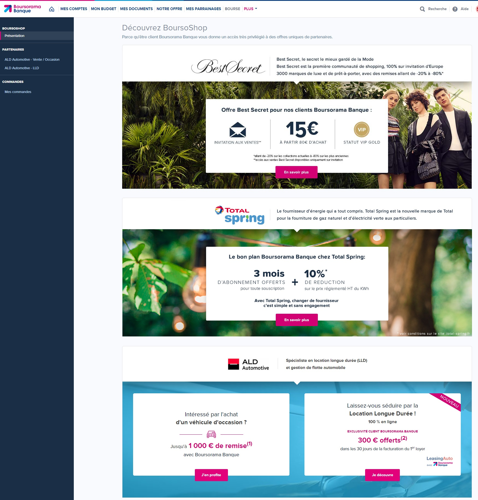
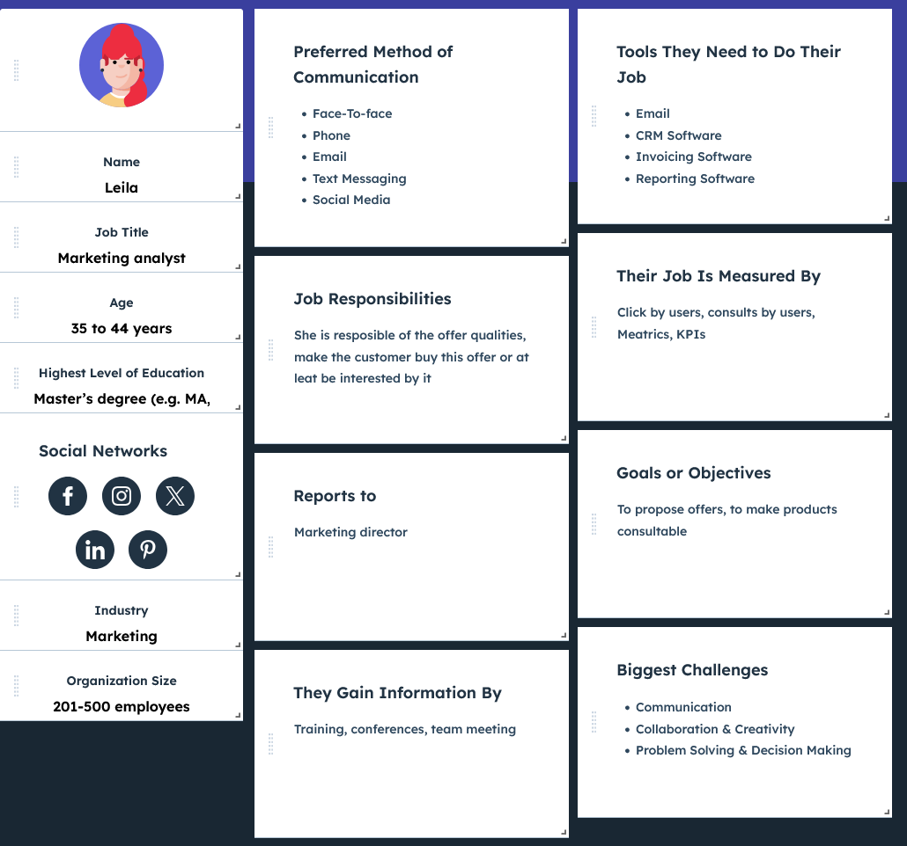

À propos & Mon rôle
En tant que UX Designer stagiaire chez BoursoBank, j’ai eu l’opportunité de travailler avec 2 équipes distinctes :
- ✅ En tant que Principal UX Designer (pendant 6 mois) pour le service client : mon stage a permis à BoursoBank de recruter une ressource dédiée au service client (avant mon arrivée, l’équipe d’infographie était quasi exclusivement dédiée au marketing).
- ✅ En tant que UX Designer (pendant 1 mois) dans l’équipe UX du département marketing : à la fin de mon stage, j’ai travaillé sur 2 à 3 projets.
J’ai rencontré deux défis ici : comprendre le domaine bancaire et les besoins des utilisateurs, et appliquer mes compétences en UX après mon Master. Heureusement, j’ai eu une excellente équipe, et le stage a été une réussite.
Problématique
Après plusieurs études menées par mes anciens collègues, nous avons constaté que l'affichage des offres sur BoursoShop (une plateforme de réductions réservée aux clients de BoursoBank) n’était pas optimal, notamment pour les offres multiples. Les utilisateurs s’ennuyaient beaucoup lorsqu’ils utilisaient cette fonctionnalité sur mobile.

Contexte & Défis
Jusqu’alors, avec cet affichage peu ergonomique, le nombre d’offres affichables en ligne était limité à 3. Pour inciter les clients à utiliser davantage cette fonctionnalité, nous devions trouver une solution pour afficher les offres de manière claire et rendre l’affichage mobile plus agréable.
Recherche Utilisateur
Pour obtenir des retours précis, nous avons utilisé plusieurs méthodes, allant des entretiens individuels aux ateliers collaboratifs. Voici un aperçu des actions menées :
- ✅ Entretiens utilisateurs : Interviews approfondies avec des profils variés : étudiants, seniors, ingénieurs, professionnels du marketing. Objectif : comprendre leurs attentes, frustrations et préférences, notamment sur mobile.
- ✅ Ateliers collaboratifs : Réunions entre les équipes design, marketing et développement pour aligner les priorités et imaginer des solutions créatives.
- ✅ Sondages : Diffusés à un large public pour recueillir des données quantitatives sur les préférences d’affichage et l’intérêt pour un carrousel.
- ✅ Audit des outils : Analyse des outils existants et des contraintes du marketing, notamment l’impossibilité de dépasser trois offres en simultané.
Personas
Pour mieux comprendre nos utilisateurs, nous avons créé des personas. Ces profils nous ont permis d’identifier les attentes de chaque cible et d’adapter l’interface en conséquence.

Membre du département marketing
Parcours Utilisateur
Hafid – Client étudiant
Phase : Consulter les offres
- Émotions : 😟 Anxieux, 🤔 Curieux
- Douleurs : Liste peu attrayante, difficile de repérer rapidement les offres intéressantes
- Opportunités : ✅ Mettre en place un carrousel fluide avec les infos clés visibles immédiatement
Phase : Interagir avec les offres
- Émotions : 🙂 Engagé, 😊 Optimiste
- Douleurs : Peu d’attrait visuel, manque de clarté dans les descriptions
- Opportunités : ✅ Ajouter des détails extensibles, visuels simples et accrocheurs
Fatima – Cliente senior
Phase : Consulter les offres
- Émotions : 😟 Incertaine, 😒 Distante
- Douleurs : Trop de scroll, difficile de trouver une offre adaptée
- Opportunités : ✅ Carrousel intuitif, repères comme "Recommandé pour vous"
Phase : Interagir avec les offres
- Émotions : 😕 Hésitante, 🙂 Rassurée (avec de l’aide)
- Douleurs : Descriptions longues, boutons peu visibles
- Opportunités : ✅ Textes simplifiés, boutons larges et lisibles
Leila – Membre du marketing
Phase : Ajouter des offres sur BoursoShop
- Émotions : 😟 Pression, 😡 Inquiète du désengagement utilisateur
- Douleurs : Affichage trop long, peu dynamique, pas engageant
- Opportunités : ✅ Carrousel évolutif, ordonnable, attractif visuellement
Solution & Fonctionnalités
La solution développée améliore la présentation et la navigation des offres BoursoShop avec un design mobile-first et accessible à tous.
- ✅ Navigation en carrousel : Affichage fluide jusqu’à 10+ offres
- ✅ Design responsive : Optimisation pour tous les écrans
- ✅ Mise en valeur dynamique : Infos clés visibles immédiatement
- ✅ Personnalisation basée sur les données : Adaptation des priorités selon les profils utilisateurs
- ✅ Expérience utilisateur améliorée : Navigation claire et rapide
Une solution pensée pour tous les profils, tout en offrant de la flexibilité à l’équipe marketing.
Maquettes
Voici les principales maquettes de l'application illustrant les écrans et parcours utilisateurs.
Résultats
- ✅ Satisfaction utilisateur en hausse de 20%, atteignant 90%
- ✅ Taux d'engagement mobile en forte augmentation (60% d’utilisateurs actifs plus longtemps)
- ✅ Gain de temps pour le marketing : campagnes plus rapides, offres plus nombreuses
Outils Utilisés
- ✅ Hubspot / MakeMyPersona
- ✅ Balsamiq / Axure RP / Photoshop
- ✅ Jira / MS O365 (Forms, Teams, Whiteboard)
← Retour aux projets
About & My Role
As Intern UX Designer at BoursoBank, I had opportunity to work with 2 distinct teams :
- ✅ As Principal UX Designer (for 6 months) for the Customer Service : my intership allow Bourso Bank to recruit a resource for the customer service (until my arrival, the Infography team were almost totally allocated to the Marketing Department only.
-
✅ As UX Designer (for 1 month)
in the UX Team of the Marketing Dept. : at the end of my internship, I worked on 2-3 project.
I had 2 challenges here : undestand the bank domain and users' needs & apply my UX skills after my Master's Degree. Fortunately, I had a great team and my internship was a success.
Problem Statement
After some studies made by my former colleagues, we saw that the offers displayed in BoursoShop (a platform for some discounts reserved to BoursoBank clients) are not very good, espacially with multiple offers. The users were terribly borred when they use this features via smartphone
Context & Challenges
Until then and with this bad display, the limitation of products displayed in a row was 3. To make the customer using this feature more, we had to found a solution to display the offers and make the smartphone display more usable.
User Research
To gather precise feedback, we used several research methods, ranging from individual interviews to collaborative workshops. Here’s an overview of the steps we took:
- ✅ User Interviews: We conducted in-depth interviews with users from diverse demographics, including students, seniors, engineers, and marketing professionals at BoursoBank. These sessions focused on understanding their needs, frustrations, and expectations regarding offer navigation and visibility, particularly on mobile platforms.
- ✅ Collaborative Workshops: Cross-functional workshops brought together design, marketing, and development teams to align on user priorities and explore creative solutions for displaying multiple offers.
- ✅ Surveys: Surveys targeted a wider audience to gather quantitative insights about user preferences for offer presentation and their likelihood to interact with carousels or other display methods.
- ✅ Process Audit: An audit of existing tools and workflows revealed constraints in marketing's ability to scale beyond three offers, limiting future growth opportunities.
User Personas
To better understand the different types of users, we created personas. These profiles allowed us to define the specific needs and goals of each user group and tailor the tool to their objectives.
Marketing department member
User Journey
Hafid - Student client
Phase: Want to consult offers
- Emotions: 😟 Anxious, 🤔 Curious
- Pain points: Current list view feels outdated; hard to quickly identify the most relevant offers.
- Opportunities: ✅ Introduce a carousel for quick navigation; highlight key details directly on the carousel tiles.
Phase: Want to interact with offers
- Emotions: 🙂 Engaged, 😊 Optimistic
- Pain points: Limited visual appeal; difficulty understanding detailed offer information at a glance.
- Opportunities: ✅ Add expandable offer details directly from the carousel; use visuals like icons and images to enhance understanding.
Fatima - Senion client
Phase: Want to consult offers
- Emotions: 😟 Unsure, 😒 Distant
- Pain points: Overwhelmed by scrolling through a long list; struggles to identify offers tailored to her needs.
- Opportunities: ✅ Provide a carousel for intuitive navigation; include callouts like "Recommended for You" to guide her choice.
Phase: Want to interact with offers
- Emotions: 😕 Hesitant, 🙂 Relieved (after clear guidance)
- Pain points: Difficulty distinguishing offers; finds detailed descriptions too complex or wordy.
- Opportunities: ✅ Simplify text in descriptions; use large buttons and simple visuals to improve interaction.
Leila - Marketing Dept. member
Phase: Want to add offers to BoursoShop
- Emotions: 😟 Pressured, 😡 Worried about user engagement
- Pain points: Fear of users getting bored due to long scrolling; lack of dynamic visual appeal to retain user interest.
- Opportunities: ✅ Introduce a carousel that supports showcasing multiple offers at once; allow flexible customization of the order and layout of offers.
Solution & Features
The developed solution enhances the presentation and navigation of BoursoShop offers, ensuring an intuitive, mobile-first design that caters to diverse user needs.
- ✅ Carousel Navigation: Streamlined display for up to 10+ offers, allowing quick browsing without overwhelming users.
- ✅ Responsive Design: Optimized layouts ensuring seamless accessibility on mobile devices.
- ✅ Dynamic Offer Highlighting: Key features and benefits displayed prominently, improving user engagement.
- ✅ Data-Driven Customization: Marketing team tools for real-time updates and offer prioritization based on user preferences.
- ✅ Enhanced User Experience: Simplified browsing to minimize frustration and maximize conversion rates.
This solution ensures usability for all demographics while empowering the marketing team with flexibility and scalability.
Maquette mobile BoursoShopSketch PC
Mockups
Below are the mockups of the key screens in the application, demonstrating how the user interface supports the workflows of offers' consultation.
Results
- ✅ User satisfaction rose by 20% after implementation.
- ✅ The mobile engagement rate increased significantly, with 60% of users interacting longer on the carousel.
- ✅ Marketing efficiency improved, enabling faster rollout of promotional campaigns and scaling offers beyond the initial limit of three.
Tools Used
- ✅ Hubspot / MakeMyPersona
- ✅ Balsamiq / Axure RP / Photoshop
- ✅ Jira / MS O365 (Forms, Teams, Whiteboard)
← Back to projects